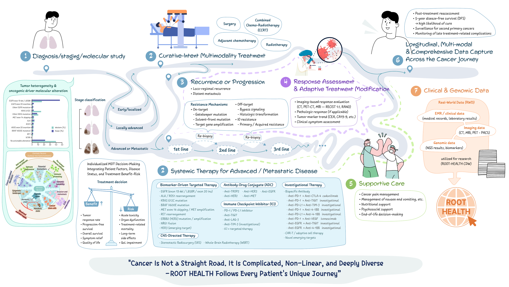

INTRO
About Our Lab
Our laboratory focuses on clinical data research and artificial intelligence to support diagnosis, prognosis prediction, and treatment decision-making in cancer care.
We integrate diverse clinical information and multimodal medical data to develop data-driven research frameworks and AI models that can be translated into real-world clinical practice.
By closely collaborating with clinicians and researchers, we aim to generate practical evidence and technologies that improve patient care and clinical outcomes.
Our Research Story
Cancer care is a continuous and non-linear journey. Our research follows patients across diagnosis, treatment, response assessment, recurrence or progression, supportive care, and long-term follow-up by integrating longitudinal, multimodal clinical and genomic data.

Research Direction
Clinical Data Research
We analyze real-world clinical data to understand patient characteristics, treatment patterns, and clinical outcomes, and to generate new evidence for cancer research and patient care.
Artificial Intelligence
We develop machine learning and deep learning models using multimodal medical data to support prediction, clinical decision-making, and precision oncology.
Precision Medicine
We integrate clinical, molecular, imaging, and longitudinal data to better understand individual patients and support personalized treatment strategies.
Our Vision
Our vision is to solve real clinical problems through data and artificial intelligence, and to develop practical research tools that can improve patient outcomes and support precision cancer care.